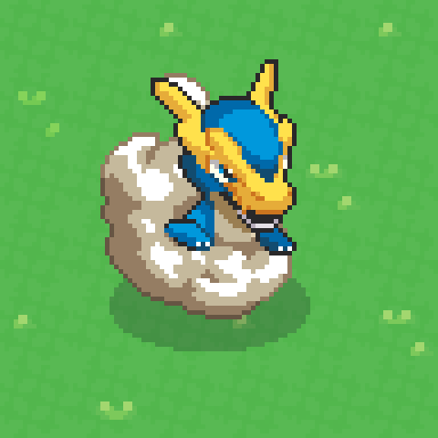
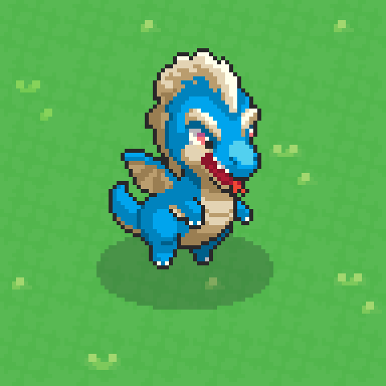
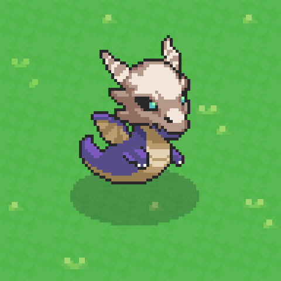
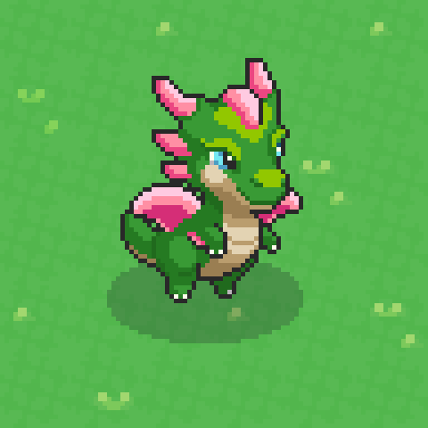
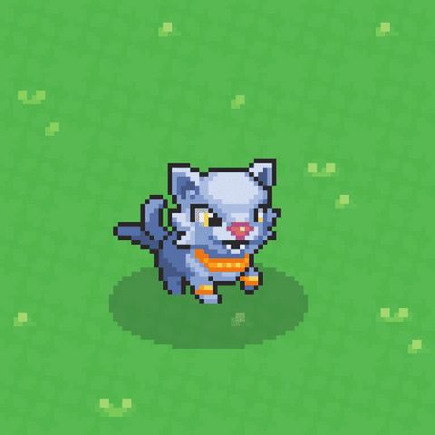
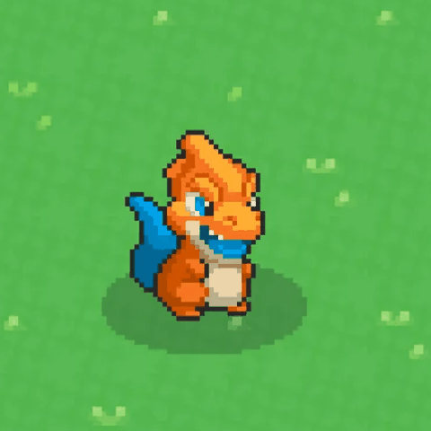

01TWO HALVES, ONE GAME
The idle halfYour monsters farm, gather and produce around the clock. Keeps running even when the game is closed.
The active halfYou hunt rare creatures, craft gear and fight other trainers. Only moves when you’re playing.
Better hunts feed a better farm, and a better farm funds better hunts.
The split they’re aiming atRoughly 50/50, or 30/30/30 across farming, combat and market activity. Not an RPG with a farm bolted on.
LIKE THISYour farm is a slow cooker that runs all night. Hunting is the trip to the shops for better ingredients.
02THE CORE LOOP
- Catch — hunt Yakkamon in the wild. Each one joins your roster.
- Work — send them to gather. They repeat automatically, even offline.
- Collect — the haul stacks in a storage bin. Tap to bank it.
- Craft — turn resources into gear, items, buildings and tiles.
- Maintain — feed your monsters, refertilize degraded plots, keep every Region running.
- Level up — better team, better gear, rarer catches. Back to 01.
LIKE THISIt’s a snowball. Do it twenty times and you have an empire — but you have to keep sweeping the path.
03YOUR YAKKAMON
30 species in the early-access build (26 shown so far; six named and revealed Oct 14 — see 05), the rest arriving per Chapter. Four things decide if one individual is worth keeping.
Its speciesDecides what it can gather — and fixes its rarity tier.
Its statsEvery monster rolls differently. Two of the same species aren’t identical. Battle stats: Health, Attack, Defense, Speed. How they grow: growth tier, archetype, leveling type (see 04).
Its utilityA boost it carries. Named on Legendaries; randomly rolled on everyone else, separately from stats.
Its skillsWhat it actually does in battle. Rolled per individual from three pools — species, type, general — some rarer than others (see 04).
Underneath: real genetics, hidden starting values, and training values that shift stats by how you raise it.
No wearable gear“The Yakkamon have the stats.” Maybe one held item. 13 types at launch, one per monster — dual types later. Named so far: dragon, psychic, fire, electric, water, grass, spirit.
LIKE THISTrading cards. Same picture on the front, better numbers on the back.
NEW NOV 3
04GROWTH, ARCHETYPES & SKILL POOLS
The Nov 3 build put three labels on a monster’s card, shown off by a lucky level-7 catch: growth tier S, glass cannon, rapid.
Growth tierHow many stats it gains per level. S is the top; the ladder below is unpublished.
ArchetypeWhere the stats go. Glass cannon: Attack over Defense, Speed over Health, every level. The rock type was “a tank”.
Leveling typeHow fast. Rapid levels “very, very quickly” — “an excellent starter”.
Three skill poolsSkills roll from the species pool, the type pool and the general pool, with their own rarities. They unlock by level (Propagate, a rare grass skill, at 51) and unlocked skills are swapped in.
Rare skills stay in their typeAt first release only Grass types get Propagate — so only Grass types play regen tank. Cross-type breeding is the way across, later.
Kits fire on counts: an AoE every fifth hit, a tackle every third, an opening bonus. A synergistic kit beats ten levels. Legendary skills are meant to be “busted”: “if everything’s OP, nothing is.”
LIKE THISA scouting report: raw talent, the position they’re built for, how fast they develop — and the moves a coach may teach them.
05THE GENESIS SIX
Every one of the 11,265 Genesis eggs opened Oct 14 into one of these — or into nothing. Pictures are the reveal art on the NFTs; counts are the whole collection.

Raigowas Storm · Legendary · Dragon
3 · 1 in 3,755 · 75 existStormcharged — in range work 2× as fast (large AOE)

Ondiwas Echo · Legendary · Dragon
5 · 1 in 2,253 · 275 existIn range produce double resources (small AOE)

Kovawas Ghost · Legendary · Dragon
10 · 1 in 1,127 · 400 existUnsleeping — in range always at max stamina (small AOE)

Saluwas Bloom · Legendary · Dragon
50 · 1 in 225 · 2,000 existRegenerates % of Max HP every combat turn

MalandrixRare · Psychic
50 · 1 in 225 · 4,000 existNormal working Yakkamon — no ability yet

BrazitoUncommon · Fire
10,316 · 91.6% · 15,000 existNormal working Yakkamon — no ability yet
831 Bad Eggs · 7.4%Reveal nothing (multi-wallet minters). Down from the 973 quoted Sep 17. All in the minted 10,000.
Minted vs airdropped10,000 minted held 63 Legendaries, 38 Malandrix, 831 Bad Eggs; the 1,265 airdropped Oct 13 held 5 Legendaries, 12 Malandrix, no Bad Eggs. One clean minted egg in 146 held a Legendary.
Not on the NFTs yetUnique stats (a small reveal closer to launch) and the two working tiers’ utilities. The four egg colors were cosmetic.
LIKE THISNine eggs in ten hatched the same small orange hothead. The floor price is a monster now — and it has a name.
06RARITY, DECODED
Rarity is set at species levelEvery individual of a species shares its tier. There is no rare version of a common monster. No lucky upgrade roll exists.
Rarer is not simply strongerThe best commons beat middling rares on raw stats. Rarity buys a higher ceiling and exclusive traits.
Legendary · NFTPre-minted, fixed scarce supply. Traits no other tier can have.
Rare · SFTTime / event limited. Supply set by how hard players hunt.
Common · no tokenPlain game asset.
Hunting is the primary route at any tier. The Genesis set put faces on the tiers: Brazito (Uncommon, 15,000), Malandrix (Rare, 4,000), four Legendary dragons (75–2,000 each) — see 05.
LIKE THISA first-team squad player can outperform a benched international. The badge tells you the ceiling, not the form.
07TYPE LOCKING
Every resource is gated to a type — so your roster decides what you can gather at all.
Wood ← Grass typesCONFIRMED
Wood ← Fire typesBLOCKED
StoneUNKNOWN
Berries / cropsUNKNOWN
Regenerate a node ← Grass only (Nov 3)CONFIRMED
Region materials ← local typesTBC
In-game message“Fire type cannot harvest wood!” Collecting more species literally unlocks more of the map.
And you can’t buy your way outBasic monsters have limited tradeability, so every missing type is an expedition you fund yourself.
Jobs are type-locked tooMany types work the plots, but only Grass types regenerate a depleted node — and rare type-pool skills stay in their type at first (see 04).
LIKE THISYou wouldn’t ask a fish to chop firewood. Here the game enforces it.
08THE WORK CYCLE
- Assign a Yakkamon to a resource it’s allowed to gather.
- It takes time — each cycle runs a set duration before paying out.
- It costs stamina — the limit on work in one stretch.
- It produces — the haul drops into a storage bin.
- It repeats — no tapping. Work continues while you hunt.
- It sleeps when tired, recovers, restarts itself.
WORKING→OUT OF STAMINA→SLEEPING→WORKING
Job lists, not single jobs (Nov 3)Drag jobs above a line in priority order: berries when off cooldown, then crops; regenerate trees “when there’s nothing else to do”. Nothing happens you didn’t assign.
Food buys stamina, but only so muchFeeding fills a bar red → yellow; fully yellow and it must sleep next, no more topping up — and sleep is long. Run two per key role.
Headcount is capped by your trainer level (see 09). Beds too: short of them, tired monsters queue (Sep 17). Level them up, collect more, claim more tiles.
LIKE THISA little worker with a battery. Work drains it, sleep charges it, and it clocks back on unprompted.
NEW NOV 3
09TRAINER LEVEL & THE COMMAND CAP
The command capHow many Yakkamon can work at once. Base trainer level + 4 in the demo (six, then seven after a win); the plus four will probably go, leaving: your trainer level is your crew size.
Trainer XP comes from fightingFarm raids (“Team Rocco”), dojo fights, gym challenges — every win pays it. PvP is meant to be the primary faucet. Combat is how the farm gets bigger.
You can’t command above your levelA traded Yakkamon keeps its level, stats, genetics and training — but a bought level 99 waits until you’ve earned the right to use it.
It pulls against redundancyForced sleep says own two of every worker; the cap says you can’t run them all. “You also want to increase your command cap.” The tension is designed.
Replaces September’s “as many as you have”. Unpublished: the formula at release, XP per win, whether hunters and bench count.
LIKE THISA foreman’s license: how big a crew you may run and who you may give orders to — earned by winning, not bought.
10UPKEEP & DEGRADATION
A resource sink that does not exist in Sunflower Land — but it comes from use, not absence.
Plots wear outThe job card carries a degradation marker. The example shown read degraded 1.6× — that plot farms slower until you refertilize it.
Fertilizer costs resourcesSo upkeep is a permanent drag on production, not a cosmetic status.
Being away just pauses it“No decay, no neglect feature, no punitive system for not logging in.” Bins fill, jobs stop, and the farm waits.
Plot groups are non-linearTiles come in groups of three. Upkeep scales more slowly than production, so filling a group beats spreading thin.
Not published: degradation rate, fertilizer recipe, live group size.
LIKE THISA vegetable patch, not a vending machine. Crop the same soil forever and yields drop until you feed it.
11STORAGE BINS
Resources pile into a bin that keeps filling while you’re offline — until you tap it to collect.
EARLY 5 / 20→FILLING 84 / 120→FULL — MAX 120 / 120
The catchBins cap out. Every hour a bin sits at MAX is production you never banked.
Upgrades, up to 800 (Nov 3)A craftable storage upgrade doubles any bin’s capacity, up to 800. The 20 and 120 are rungs, not limits.
One bin per resourceThe team narrowed it down from many bins. Hold several Regions and expect a set in each — plus a transport step home.
LIKE THISA piggy bank that fills itself. Once full, extra coins bounce off the top.
12LOOKING AFTER THEM
Status icons float above a monster and the feed calls it out by name.
HungryNeeds feeding before it carries on. Food restores stamina — but fills a bar red → yellow, and fully yellow means it must sleep next (Nov 3).
HurtInjured or knocked out, out of action. Battle damage sticks until rested or healed (Sep 24).
SleepingRecovering stamina. Not broken.
Needs an itemCan ask directly with a speech bubble.
An item bar sits at the bottom — milk, flowers, mushrooms, health items. A monster in a bad state isn’t earning, so upkeep is economics, not flavor.
Fruit is buffs, not food (Nov 3)“Nothing here eats fruit anymore.” Grass and crops feed a working team; fruit goes into buffs. Kova’s crew spends no stamina — buffs only, no food costs.
LIKE THISPets with jobs. Feed them, patch them up, let them nap — they keep earning.
13HOW BOOSTS STACK
Same ability → does not stackTwo monsters both carrying “Wood Gatherer I” give you the effect once — even two different species. Reconfirmed Sep 17.
Different name or higher rank → stacks“Wood Gatherer” plus “Extreme Wood Gatherer” is two effects, both apply.
The roster shape this impliesWide, not deep. One excellent specialist per job beats five copies of your best one.
LIKE THISTwo identical umbrellas keep you exactly as dry as one. An umbrella and a raincoat is the upgrade.
14UTILITIES & AURAS
The boosts come from the Yakkamon themselves. Legendaries have named ones (real name, working name · total supply · airdrop ranks):
| Genesis | Utility |
|---|
Raigo (Storm) · 75
ranks 1–50 | Within range work 2× as fast · large AOE |
Ondi (Echo) · 275
51–250 | Within range produce double · small AOE |
Kova (Ghost) · 400
251–500 | Within range always at max stamina · small AOE |
Salu (Bloom) · 2,000
501–2,000 | Regenerates % of Max HP every combat turn |
Small vs large AOESmall: the job it stands on and the 2–3 nodes beside it. Large: a whole section of the farm.
They stack — some multiplyRaigo + Ondi (Storm + Echo) confirmed: twice the speed on double the output.
Rares & Uncommons roll theirsUtility, species and stats are separate dice; the revealed Malandrix and Brazito read “no ability yet”. Keepers rolled all three.
In play (Nov 3)Kova’s crew spends no stamina working — no food, no forced sleep. Raigo is the strongest and may still be buffed. Together “absolutely busted”: about half the time to the level-30 expansion.
Working names retired: Storm, Echo, Ghost, Bloom are Raigo, Ondi, Kova, Salu. Numbers still unpublished. The eggs’ 68 Legendaries are out: 3 / 5 / 10 / 50 (see 05); the trainer airdrop places 2,009 more.
LIKE THISA good foreman. He doesn’t lay bricks — everyone within earshot lays them faster.
15BREEDING & GENETICS
Genetics carry down the line. Breed two strong individuals of the same species and their stats and traits propagate.
A breeding limit, scaled by rarityBred Yakkamon are tradable, so: commons breed above replacement, rares around it, some Legendaries once. Noise still creeps in per generation.
80–90% predictableOne RNG component plus one fixed. You can build a best-case / worst-case range before committing.
Designed for 1–3 year projectsLong-running attempts to move a trait set onto a perfect monster. Later: across species, then across type groups.
No forging into rares — but charmsTen commons into one rare was rejected. Gathering enough of a common species to forge a tradable charm is coming (Nov 3).
Power creep by design (Nov 3)Two average parents occasionally roll higher, creeping stats toward the cap. Legendaries and Rares “always remain good”; cross-type breeding later moves type-locked skills.
Evolutions: not at launchConfirmed, per monster, triggers hidden — but held back until the supply problem (everyone evolving up) is solved.
Advanced breeding is not in early access. It arrives post-launch.
16YOUR BASE & YOUR GYM
Expand your land, tile by tileEach tile has a resource price on the button — the starter reads 10 Wood + 1 Stone.
Buildings & stationsWorkbenches with their own counters, houses with beds, crop plots, rock nodes.
Hunting AreaA tile you claim, then pay to enter — 5 berries on the sign at launch.
Your gym comes firstLand customization: unlikely at launch. Your gym: a working prototype, shipping before the arena — decorate it, visit others’, battle them, with leaderboards attached. Officially, a gym is a team you leave behind for others to challenge — it wins for you while you’re offline.
Live on Nov 3Expansion six: crafted lumber + 1 Stone; it regenerated every node and opened the hunting zone and safari zone. Rival teams raid your farm (“Team Rocco”). The dojo sits in the left menu (see 23). Moving trees and buildings: not currently; decorations yes.
Menu: Squad (rename, favorite) · Items · Quests · Shop · Trade · Log. Built for landscape.
17REGIONS & TILES
Three layers, and nothing you unlock ever closes. Grasslands is the starter.
- Tiles — gather resources to unlock more. A tile holds resources, build room, or a hunting area — and each raises how much you can run at once.
- Regions — grow your starting Region far enough and you unlock whole new ones, each with its own resources and its own monster types.
- Chapters — Regions get bigger each time, and more arrive with each Chapter alongside new species.
The Water RegionWater hunting areas full of Yakkamon you couldn’t catch back home. A new Region can’t be worked until you catch its first local type.
Lands never resetYou keep every land and Region. Leave one alone and its bins fill and it stops earning — no decay, but no output. The team’s word: automate.
LIKE THISA shop that keeps adding aisles — and you still stock the old ones.
18LOGISTICS
Moving and sharing resources between your Regions “becomes a core part of the strategy” — the trainers who master logistics get ahead.
So inventory is per RegionThat sentence has no meaning with a global bag. Wood gathered in the grasslands stays there until something moves it.
What followsA new Region has to be fed before it feeds you, and Region-only materials become things you ship.
Not publishedWhat a transfer costs — time, stamina, a building, a fee, or a free tap — and whether monsters move freely.
LIKE THISTwo warehouses in two towns. Doubling the shelves is easy — the lorry between them is the business.
19DAY, NIGHT & SEASONS
A day every few real hoursTime of day rolls over every few real hours — several dawns and nights pass in one day at your desk, so every time band reaches every player. “Miss one, and another is never far away.”
One universal clockNo personal timezones, no resetting — night in Yakkamon is night for everyone, and trainers worldwide hunt the same windows at the same moment. One player’s spawn log works everywhere.
The night shift is a statSome Yakkamon carry traits that thrive at certain hours — a night-owl on the night shift outworks a sleeper. Match your roster to the clock, and check for the trait before trading a “duplicate”.
Seasons gate the shopSeasons ride on the daily cycle and change the weather — which touches grounds, availability and how monsters work. Some resources and items can only be gathered or crafted in season: “full storehouses” beat scrambling. Map still rotates each Season (Hunting post); 3 months per the docs, weekly under consideration.
Strange skies, real-time windowsSpecial weather events land on random days and break the spawn rules — “get your hunters out”. Legendary appearances and special events run in real time on the universal clock: no pausing, no catching up, the same window for everyone.
Player lore, warmly receivedLegendaries as the in-world cause of weather and seasons. Not confirmed — but “there’s a good home for it”.
20HUNTING
A place: grounds are tilesOn your own Regions — one of the three things a tile can hold. Each Region has its own wild types.
A time: learn the clockEach ground shows different Yakkamon at different in-game hours. No timetable is given — discovering it is the skill.
You don’t hunt aloneSend a Yakkamon to passively roam a ground while you farm. It rolls for encounters; lures and bait tilt the roll (21).
A temperament: three kinds of wildAffectionate — only comes home if your hunter wins it over. Greedy — wants resources first; won’t budge till paid. Angry — a battle; a weak hunter comes home empty. Win and you may bring the wild one home — but a hunter that wins hurt carries the damage.
Legendaries & Rares roam the groundsSporadically, no schedule — and in real time: when one lands, everyone gets the same window. Keep a strong, well-supplied team ready.
Grounds deplete, monsters don’tNo limit on hunts per Yakkamon; a hunted-out ground yields less. Spread hunts across grounds and Regions.
Still in prototypeAreas exist; the mechanics are still being tuned (Sep 17). First NFT hunt: Chapter 0 per the docs — about six weeks in, said the stream.
A catch, live (Nov 3)Expansion six opened the hunting zone; the Clover Meadow held four gray uncaught Yakkamon (water, fire, bug, grass). One woody snack, one roll, one lucky catch. Commons are day one; the Chapter 0 hunt is the Legendary event.
What hunting is saved for (Oct 14)Most of the roster is found in the game: elemental variety, shinies and variations are reserved for hunting, a small supply of Legendaries appears via hunts, and some Legendaries and Rares exist only in-game.
LIKE THISSending the dog out for rabbits. Some bite, some need a carrot, some want paying — and the field empties if you work it daily.
21CRAFTING, LURES & BAIT
Lures pick the typeGrounds have areas (a rocky outcrop among them; swamps and water to come). A rock-type lure draws rock types. Lures and bait are crafted from resources.
Bait does the talkingBait and a short emoji chat win over an affectionate monster; a stock of goods pays a greedy one. In-game notice: “prepare bait and monsters, bring berries”.
Contract hunts pay coinsFind a requested Yakkamon, earn the currency that gates the tradable layer — one of the few coin faucets.
The workshop is the coin barrier (Nov 3)Woody snacks are the bait of the build. Lumber (from wood) and clay bricks are the crafted, tradable goods; a storage upgrade is crafted the same way.
22THE BATTLE SYSTEM
“Won before the first hit lands” — the team’s official Battles guide, in eight points, on top of the Sep 17 stream’s 70/30 auto battler.
- Setup stage — drag your Yakkamon onto your side and place them freely. Front or back, and which type stands where, shape the fight. Scout the enemy team here.
- Real time, and it scales — some fights are 1v1; most are team fights with several a side and reserves on the bench that jump in when one goes down. Oct 14: three on the field, up to three in reserve — “three to six” for beta.
- They act on their own — moving into range, attacking, firing skills when conditions are met: “heal below half health”, “stun whoever fainted me”. You choose which skills each carries in.
- Types matter — every Yakkamon and every skill has a type. Hit a weakness, damage cranks up; hit a resistance, it dulls.
- You’re not just watching — call one back and sub in a reserve; drag battle items onto the field (potion on an ally, debuff on an enemy, shield before a big hit). One preparation item, equipped before the fight, buffs the whole team.
- Plenty to fight — wild encounters and hunt battles, event fights, live PvP, and player-made gyms that earn you wins while you’re offline.
- Damage sticks — a Yakkamon limps out carrying its damage until rested or healed. Manage the roster between battles.
- Everyone gets paid — items, XP for the Yakkamon who fought, trainer XP for you. Beat a wild one and you might bring it home.
Nov 3: the order of priorityType advantage → skill advantage → stat advantage → genetics. 2v1 beats 1v1: set the tank to soak both while the glass cannon hits from behind. A lower-level team with the type edge “destroyed” a higher-health rock. Rivals raid your farm; every win pays trainer XP. UI and targeting being redone.
Underneath (Sep 17 & Oct 14 streams)70% planning, 30% live input; four stats — Health, Attack, Defense, Speed; identical buffs don’t stack; AROC tanks up front, hitters behind. Skills roll per individual from three pools (see 04); a spirit type instead of ghost. Gyms first, the full arena early next year.
LIKE THISYou’re a manager, not a player. Pick the squad, place it, choose its moves — then work the touchline with subs and a potion.
NEW NOV 3
23THE DOJO, LEAGUES & LADDERS
Leagues are level capsRookie League: Yakkamon above level 10 capped out. Veterans League: above 20. Daily fights against teams you’ve already beaten. PvE now; PvP in the same leagues later.
Gym challenges are the PvP that worksPick a trainer from the leaderboard, fight the team they left behind, collect trainer XP. The gym and the dojo may become one thing.
What PvP is for“The primary faucet for your experience and for $FLOWER when it’s built out” — and it’s not in open beta.
Ladders in divisionsNo single global list: groups of ~100 of similar rating (the StarCraft II model), a global top 100 above, tournaments separate.
No guilds, factions or friends list at launchSocial features are post-beta. First release: a single-player game with PvE and trading.
LIKE THISA boxing gym with weight classes. Spar the people you’ve beaten, fight in your own class, and the rankings on the wall are your club’s.
24THE TWO-TRACK ECONOMY
Track one: free to playProduce without limit. Nothing you make here can be traded.
Track two: tradable, gated by coinsMaking something tradable costs the game’s Web2 currency — coins, maybe “new yen” later. That gate is the whole design.
Coin faucets are scarceVIP, burning crops or other assets, and Contracts. Every coin is a sink somebody paid.
The coin barrier (Nov 3)Raw wood is never tradable. A good reaches the market only after it’s crafted in the workshop for resources + coins — lumber, clay bricks. Slows bots, stops squatting: you must expand to earn.
How Yakkamon tradeCommons: forge a set number into a charm. Rares (SFT) and NFTs: one for one. Tokens on-chain too; everything else off-chain. VIP yes, lifetime VIP probably not. “Very alpha.”
Marketplace, auctions and $FLOWER withdrawals open at Chapter 0 — a month after early access per the docs (6–8 weeks, said the Sep 17 stream). “More free to try than free to play.”
LIKE THISA hobby farm with a license to sell at market. Grow all you like for your own table — the permit is rationed.
25PROGRESSION & ENDGAME
Infinite levels and expansionsPlans and sinks are meant to ship at launch; the endgame features themselves arrive after early access.
The meta is expected to moveEarly: gathering and hunting specialists are the valuable monsters. Later: once the arena (aimed at early next year) and tournaments establish, demand shifts to battle stats. The team won’t intervene.
No hard specialization capProducer vs fighter emerges from opportunity cost, not a rule.
No resets. Ever.Mistakes get worn and fixed. Inflation is attacked with hard sinks and new content absorbing old.
The balancing policy (Nov 3)Heavy for 3–6 months, then new content over live nerfs. Power creep is intentional; Legendaries and Rares “always remain good”.
OG perks are flexRecognized, not overpowered — the edge is seasonal Yakkamon that stop being available. New NFTs via Season Zero auctions, events, raffles, a Chapter grind.
Not all monsters ship at launch — 30 open early access, the rest arrive with each Chapter, each paired with a new, bigger Region.
26NOT CONFIRMED YET
Regions & tilesTiles per Region, the cost curve, parallel jobs per tile; what “grow your starting Region” means; what moving resources between Regions costs.
Work cycle & upkeep numbersCycle duration, stamina, yield, sleep rate; degradation rate, fertilizer recipe.
The type chart13 types confirmed; named so far dragon, psychic, fire, electric, water, grass, spirit; only Grass→Wood; the chart itself missing.
Stats, levels, traits, skills & utilitiesThe growth-tier ladder below S, the archetype and leveling-type lists, roll ranges (the NFTs carry none yet), XP costs, level cap, trait list; skill slots, unlock levels, pool weights; AOE radii, Salu’s regen %, every Rare / Uncommon utility.
The command cap & the dojoWhether the plus four survives; XP per win; do hunters and the bench count; leagues above Veterans, daily fights and their pay, rating, division size, promotion; is the gym the dojo.
Forced sleep & the marketFeeds to a full bar, the length of a forced sleep; the charm recipe, which crafted goods trade, the coin cost per good; the starter-egg order (Raigo > Kova > Salu, said unsure).
Hunting ratesDay length, ground regeneration, Legendary odds, a greedy monster’s price; private or shared grounds.
Battle numbers & coinsWhether three-plus-three survives beta, how many skills each carries and where they come from, item limits, the type chart; what a tradable unit costs.
The exact datesNov 3: “end of November, maybe early December” for the floodgates, “not a promise”, but within this year; announced 2–3 weeks ahead. Docs: Nov or Dec. Is “open beta” early access? The docs are the record.
The reveal’s loose endsWhat lifted 142 Bad Egg flags; whether the last 235 of the 1,500 event eggs go out; when trainer-airdrop Legendaries land; the dragons’ lore.